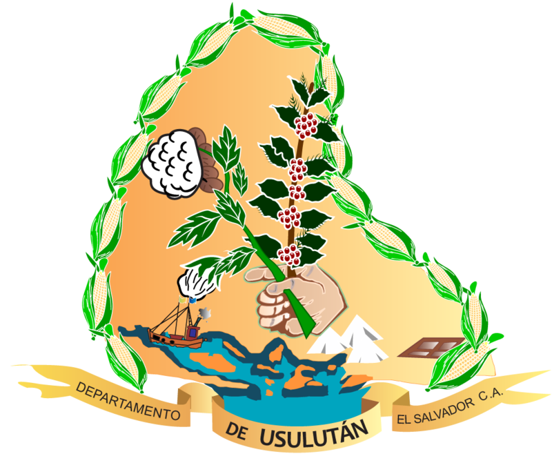

- Extensión territorial: 2,130 kilómetros cuadrados
- Idioma: Español
- Tradiciones: 1.Alegría: 26–29 de septiembre: “Los Historiantes”.
2.Santa Elena: 15–31 de diciembre: “Baile de San Benito”.
.
- Alcalde: René Osbaldo Ramos Alfaro
- Poblacion: una población de 336,541 habitantes..
- Fiestas patronales: 26–29 de septiembre en honor de San Miguel Arcángel.
- Productos artesanales: Usulután: Muñecas de trapo, hamacas y atarrayas de nailon, tallado en madera, cestería, jabón de aceituno, hojalatería, herrería, carpintería y marmolería.
- Sitios turísticos: 1.Río El Molino
2.Bahía de Jiquilisco
- Mapa
- Santa Ana
- Sonsonate
- Usulutan
- Ahuchapan
- San Miguel
- Morazan
- La Union
- La Libertad
- Chalatenango
- Cuscatlan
- San Salvador
- La Paz
- Cabañas
- San Vicente